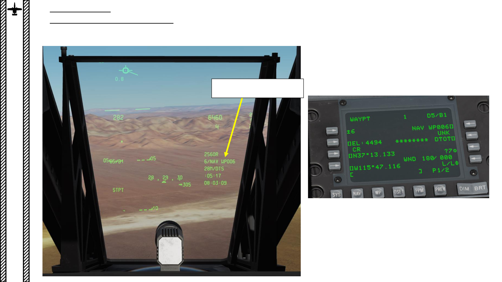

<div id="pf1dc" class="pf w0 h0" data-page-no="1dc"><div class="pc pc1dc w0 h0"><div class="c x0 y0 w1 h0"><div class="t m0 x228 h1 y1 ff1 fs0 fc0 sc0 ls2 ws0">476</div><div class="t m0 x7 hd y480 ff7 fs7 fc1 sc0 ls23 ws0">6 <span class="ffa ls0">–<span class="_"> </span><span class="ff7">W<span class="_ _6"></span>A<span class="_ _1a"></span>YPOINTS</span></span></div><div class="t m0 x7 h11 y683 ff7 fsa fc1 sc0 lsa0 ws0">6.2 <span class="ffa ls0">–<span class="_"> </span><span class="ff7">HOW T<span class="_ _6"></span>O ADD<span class="_ _2"></span> W<span class="_ _1"></span>A<span class="_ _1d"></span>YPOINTS</span></span></div><div class="t m1 x8 h9 y36 ff8 fs7 fc1 sc0 ls0 ws0">PART 16 </div><div class="t m1 x8 h9 y1058 ff9 fs7 fc1 sc0 ls0 ws0">–<span class="_ _13"> </span><span class="ff8">NAVIGATION &amp; ILS LANDING</span></div><div class="t m1 x9 ha y38 ff8 fs0 fc1 sc0 ls0 ws0">A-10C </div><div class="t m1 xa hb y38 ff8 fs5 fc1 sc0 ls0 ws0">WARTHOG</div><div class="t m0 x24e h8 y13fd ff7 fs0 fc1 sc0 ls0 ws0">New W<span class="_ _0"></span>a<span class="_ _0"></span>ypoint can be selected </div><div class="t m0 x24e h8 y13fe ff7 fs0 fc1 sc0 ls0 ws0">as shown in section<span class="_ _2"></span> 6.1 </div></div></div><div class="pi" data-data='{"ctm":[1.000000,0.000000,0.000000,1.000000,0.000000,0.000000]}'></div></div>
